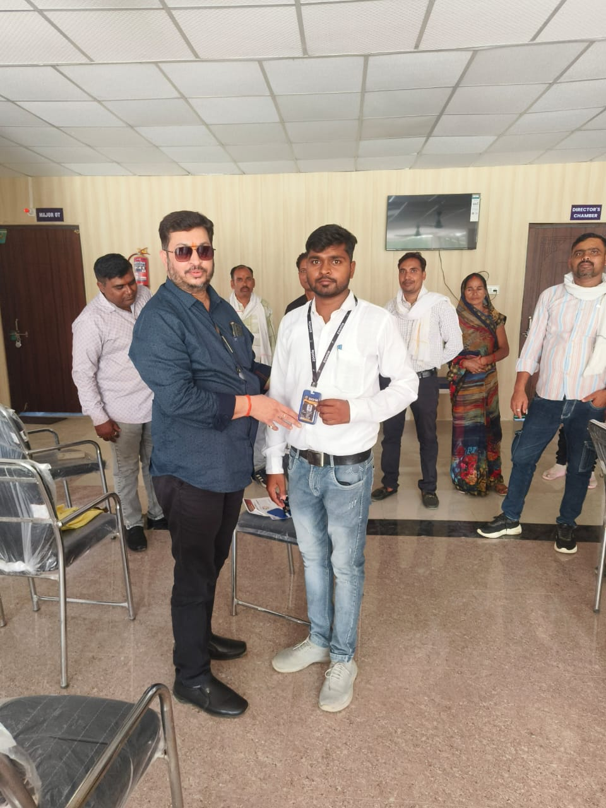
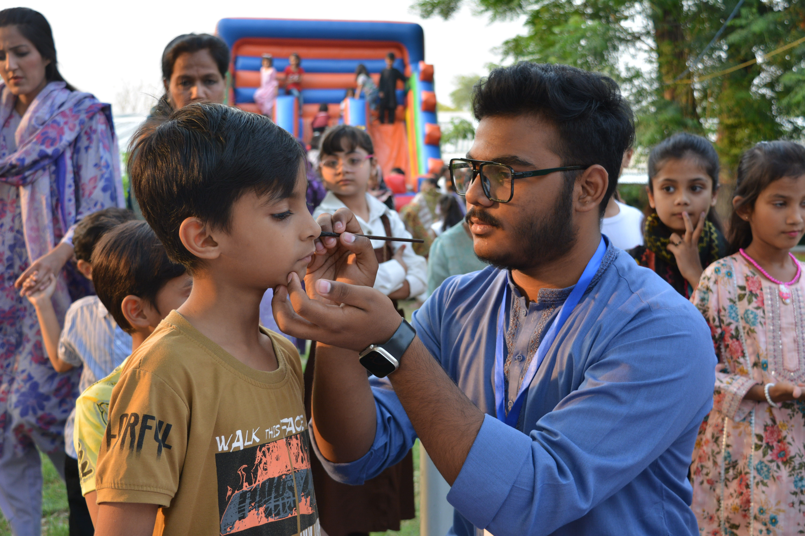
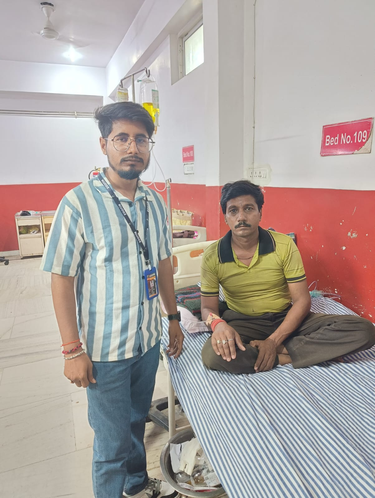
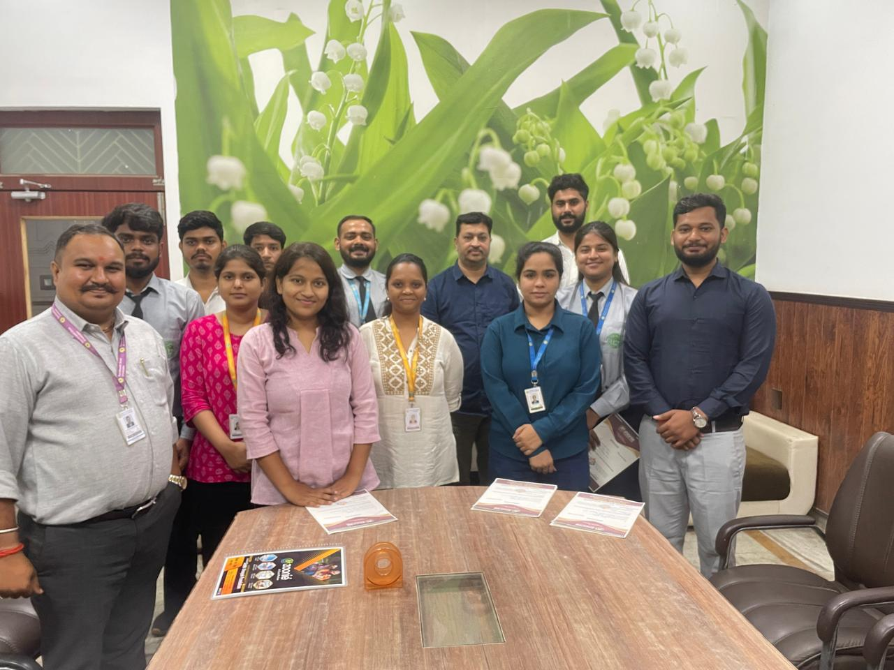
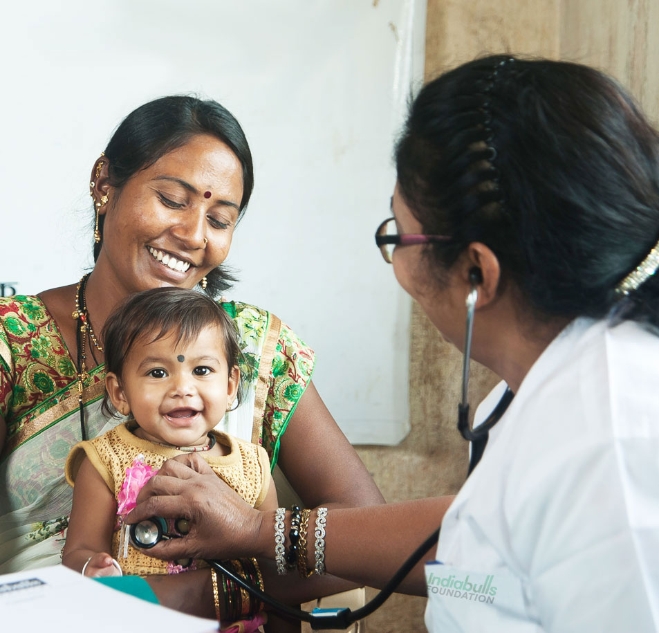

Transforming Healthcare Across Uttar Pradesh
Zoonie is committed to improving lives through healthcare access, awareness programs, emergency support, telemedicine services, and community-driven initiatives across Uttar Pradesh.

50K+
Beneficiaries Served
1200+
Awareness Camps Conducted
75+
Districts Covered
11000+
Registered Members
Empowering Communities Through Better Healthcare
Zoonie is a cloud-based healthcare platform that has been operating since 2024 under the supervision, guidance, and financial support of Om Shri Siddhi Vinayak Foundation, Prayagraj. The Foundation was registered in Prayagraj on 14 September 2010 and has been serving society since its establishment, with a special focus on supporting poor and middle-class communities. The primary objective behind the establishment of Zoonie is to make quality healthcare more affordable and accessible for everyone by helping reduce the cost of medical treatment. The platform also aims to simplify the healthcare process by minimizing the involvement of intermediaries and promoting direct access to healthcare services.

Bringing Healthcare Closer To Every Community
We believe that access to quality healthcare is a fundamental right. Through innovative healthcare programs, awareness campaigns, technology-driven solutions, and community engagement, we strive to improve lives across urban and rural regions of Uttar Pradesh.
Our initiatives focus on preventive healthcare, emergency support, health education, and connecting underserved populations with essential medical services.
Our Mission
To provide affordable, accessible, and reliable healthcare support while promoting awareness and wellness throughout Uttar Pradesh.
Our Vision
To create a future where every individual can access quality healthcare regardless of location or economic background.
Core Values
Compassion, transparency, integrity, innovation, and community welfare guide every initiative we undertake.
Expert Support
Experienced healthcare professionals and volunteers.
Rural Outreach
Bringing healthcare access to underserved communities.
Digital Healthcare
Modern telemedicine and healthcare technology support.
Community First
Focused on improving the lives of people across UP.
Healthcare Solutions For Every Community
We provide healthcare services, awareness programs, emergency support, and technology-driven healthcare solutions designed to improve lives across Uttar Pradesh.
Community Healthcare
Improving access to healthcare services for communities through outreach programs and healthcare initiatives.
Health Awareness Programs
Organizing awareness campaigns to educate people about preventive care, hygiene, nutrition, and healthy living.
Emergency Medical Support
Providing immediate healthcare assistance and connecting communities with essential medical resources during emergencies.
Telemedicine Services
Enabling virtual healthcare consultations and connecting patients with healthcare professionals through digital platforms.
Rural Health Initiatives
Bringing healthcare awareness and support to remote villages and underserved populations.
Healthcare Technology Solutions
Using technology to improve healthcare delivery, communication, and access to medical services.
Together We Can Build A Healthier Future
Join hands with Zoonie and help us bring healthcare, awareness, and support to thousands of families throughout Uttar Pradesh.
S.F. Health Membership Cards
Choose the healthcare card that best suits your family's medical protection and support needs.
Works Alongside Other Healthcare Schemes
Zoonie Cards are designed to complement existing healthcare programs and insurance policies. While certain healthcare schemes may focus on hospitalization benefits, eligible members can also access additional healthcare-related support through the Zoonie healthcare network for services such as consultations, diagnostics, medicines, and other healthcare needs, subject to applicable terms, eligibility, and partner guidelines.
Benefits and services are subject to eligibility, partner participation, and applicable program terms.
Platinum Card
- ✓ Entire Family Covered
- ✓ Lifetime Renewal
- ✓ Future Members Covered
- ✓ Age 18+ Applicant
Premium Card
- ✓ Entire Family Covered
- ✓ Annual Renewal
- ✓ Healthcare Support
- ✓ Age 18+ Applicant
Pragati Card
- ✓ Family Health Support
- ✓ Business Support
- ✓ Self Employment
- ✓ Female Only
Health Credit Card
- ✓ Treatment Support
- ✓ Surgery Support
- ✓ Medicine Coverage
- ✓ Female Holder
Creating Meaningful Change Across Uttar Pradesh
Through healthcare initiatives, awareness programs, and community outreach, we continue to make a positive impact in the lives of thousands.
0
Beneficiaries Served
0
Awareness Camps Conducted
0
Districts Covered
0
Registered Members
Serving Communities Across Uttar Pradesh
Zoonie is committed to expanding quality healthcare services across every district of Uttar Pradesh through health camps, telemedicine, awareness programs and community healthcare initiatives.
Bringing Healthcare Closer To Every Community
Explore our free medical camps, health awareness drives, vaccination programs, blood donation initiatives, and community healthcare activities across Uttar Pradesh.
.jpg)







Strengthening Communities Through Healthcare Excellence
Our efforts focus on creating sustainable healthcare solutions that improve quality of life, promote awareness, and ensure access to essential healthcare services.
Community Outreach Programs
Conducting awareness and healthcare support initiatives throughout UP.
Telemedicine Accessibility
Connecting patients and healthcare professionals through digital platforms.
Rural Healthcare Support
Extending healthcare resources to underserved and remote communities.
Awareness Campaigns
Educating people on preventive care, hygiene, and healthy living.
Building Uttar Pradesh's Largest Healthcare Network
Our mission is to create a connected healthcare ecosystem across Uttar Pradesh, ensuring that every member can access quality healthcare services whenever and wherever needed.
2700+
Zoonie Covered Multi-Speciality & Super-Speciality Hospitals
3200+
Diagnostic & Testing Centers Across Uttar Pradesh
5000+
Zoonie Affiliated Pharmacies
1250+
Zoonie Affiliated Ambulance Services
Member Benefits
- All Zoonie Cards can be utilized multiple times according to applicable program norms.
- Card benefits can be accessed across empanelled healthcare entities throughout Uttar Pradesh, subject to eligibility and partner participation.
- Members will be able to access complete details of registered healthcare entities through the Zoonie mobile application, including location, contact information, available services, and facilities.
Serving Communities Across Entire Uttar Pradesh
From urban centers to rural villages, Zoonie is committed to delivering healthcare support and awareness initiatives throughout the state.
Our Empanelled Healthcare Partners
Hospitals, diagnostic centers and pharmacy partners working together to improve healthcare accessibility across Uttar Pradesh.
Healthcare Services at Your Fingertips
Access healthcare partners, card benefits, hospital locations, pharmacy networks, diagnostics, and member services directly from the Zoonie mobile application.
Moments Of Care, Service & Impact
A glimpse into our healthcare initiatives, awareness campaigns, community outreach programs, and social welfare activities across Uttar Pradesh.





Healthcare Activities & Awareness Videos
Watch our healthcare camps, awareness programs, community initiatives and beneficiary stories.
Every Action Creates A Healthier Tomorrow
Together we can expand healthcare access, raise awareness, and support communities across Uttar Pradesh.
Become A SupporterTrusted Healthcare Support For Communities
We combine compassion, healthcare expertise, technology, and community engagement to create meaningful and lasting impact throughout Uttar Pradesh.
Trust & Reliability
Communities trust our commitment to delivering healthcare support with honesty, dedication, and accountability.
Transparency
We believe in open communication and responsible use of resources to maximize social impact.
Experienced Team
Our team and volunteers work tirelessly to provide healthcare guidance and support.
Technology Driven
We leverage modern technology and telemedicine solutions to expand healthcare accessibility.
State-Wide Coverage
Our initiatives reach communities throughout Uttar Pradesh, including rural regions.
Community First
Every program is designed with the well-being and needs of people at its core.
Voices From The Communities We Serve
Real experiences from beneficiaries, volunteers, and supporters who have witnessed the impact of our healthcare initiatives.
Together We Can Bring Healthcare To More Communities
Your support helps us expand healthcare access, organize awareness programs, and serve communities throughout Uttar Pradesh.
Let's Connect & Create Greater Impact
Reach out to us for partnerships, volunteering, healthcare initiatives, awareness programs, or any other inquiries.
Organization
Zoonie (A Cloud Platform)
Email Address
zooniehealthcare2025@gmail.comHead Office
14-Civil Line,Opp-Radison Hotel,Sarojini Naidu Marg,Prayagraj,Uttar Pradesh-211001
Working Area
Entire Uttar Pradesh
Based In Prayagraj, Serving Entire Uttar Pradesh
Our mission extends throughout Uttar Pradesh, supporting communities with healthcare services, awareness programs, and outreach initiatives.